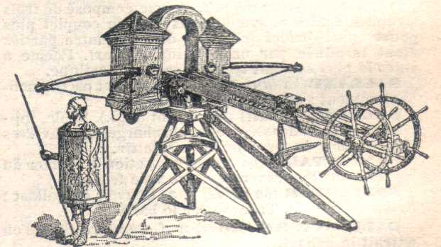

Beerlista
An old-style ballista, reimagined as a motorized, touchscreen-controlled launcher — built for fun, engineered for real.

BUILD // BEERLISTAWhat I wanted to build
Beerlista started as a joke — a small ballista-inspired device built to launch a beer — but the actual engineering problem is a legitimate mechatronics project: a mechanical structure that can aim and adjust launch power under motor control, run from a touchscreen interface, with safety built into the control logic rather than bolted on afterward.
Structure, actuation, and control
The mechanical side covers the launch structure and mechanism itself, plus motorized aiming and a motorized pullback system so launch power can be adjusted without manually resetting the arm each time.
On the electronics side, a Raspberry Pi runs the touchscreen control interface while an Arduino (or similar microcontroller) handles lower-level motor control — a split that keeps the real-time actuation logic separate from the UI layer. Safety considerations around the launch mechanism are factored into the control logic itself, not just the mechanical design.
Progress, in order
Structure & Control Architecture
Defined the mechanical structure and launch mechanism, and laid out the split between Raspberry Pi (interface) and microcontroller (motor control).
Motorized Aim & Pullback
Implemented motorized aiming and a motorized pullback mechanism for adjustable launch power, wired into the microcontroller.
Touchscreen Interface & Safety Logic
Built the touchscreen control interface on the Raspberry Pi and worked safety interlocks into the control flow ahead of live testing.
Current build state
What's held up, what hasn't
Splitting the UI (Raspberry Pi) from real-time motor control (microcontroller) kept the touchscreen interface responsive without competing for timing with the actuators.
Motorizing the pullback mechanism made power adjustment far more repeatable than a manual reset — worth the added complexity.
Continue refining the safety interlocks and touchscreen UI ahead of broader testing.